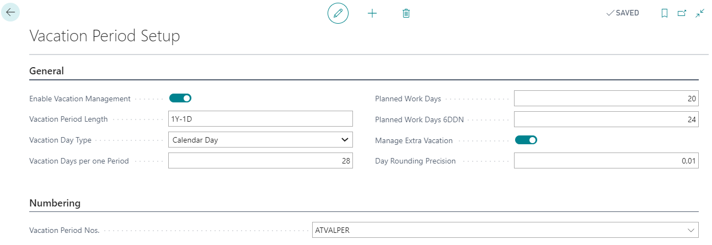
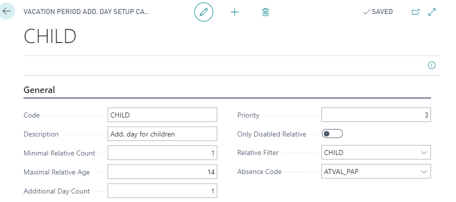
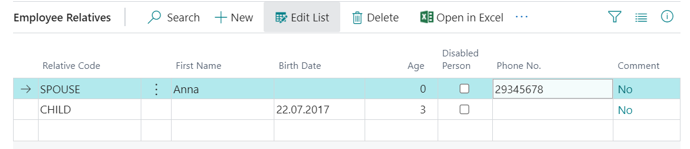
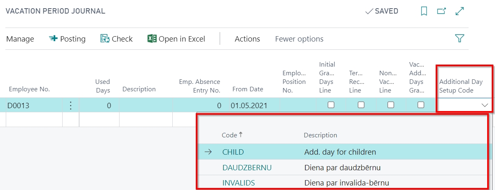
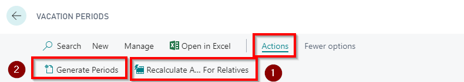
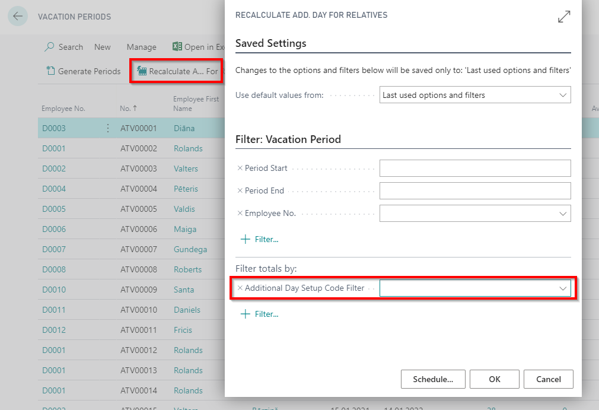
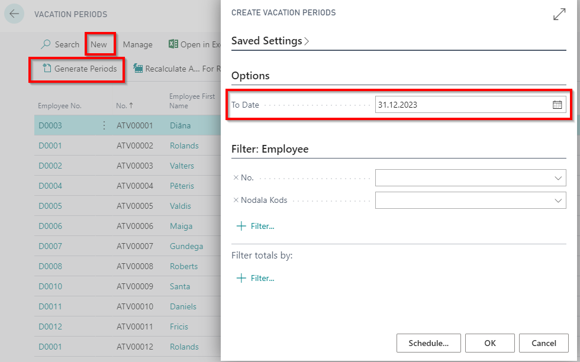
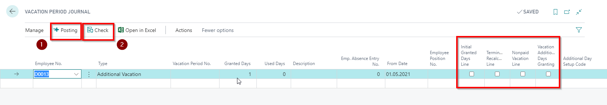

Vacation management
Vacation period setup
Vacation setup ( LV Payroll Role Center - Vacation Periods - Setup - Vacation Period Setup) consist of following fields:

| Field Name | Description |
|---|---|
| Enable Vacation Management | Enable if using vacation management. |
| Vacation Period Length | Specifies the length of the vacation period |
| Vacation Day Type | Calendar Day or Working Day. |
| Vacation Days per one Period | Indicates the number of days to be assigned per single period. |
| Planned Work Days | Indicates the number of days to be assigned per single period. |
| Planned Work Days 6DDN | Indicates the number of days to be assigned per single period for 6 day work week calendar. |
| Manage Extra Vacation | Enable if you need to maintain additional vacation days. |
| Day Rounding Precision | Indicate accuracy (decimal places), with what remaining vacation days / hours will be used in calculations. |
| Vacation Period Nos. | Indicates a vacation period number series. |
Vacation Period Add. Day Setup
Vacation period additional day setup (LV Payroll Role Center - Vacation Periods - Setup - Vacation Period Add. Day Setup) includes following fields (For each occasions should be created separate setup card):

| Field Name | Description |
|---|---|
| Code | Free selected code name. |
| Description | Freely selected title. |
| Minimal Relative Count | Specify the number. |
| Maximal Relative Age | Specify the number, including this value in the required age interval. |
| Additional Day Count | Indicate how many days should be allocated for a single period. |
| Priority | In case if a number of few conditions will occur, the highest priority will be taken. |
| Only Disabled Relative | Enables, if add. vacation type refers to relatives with disabilities. |
| Relative Filter | Data will be processed only with the specified code. |
| Absence Code | Additional days accounting will be processed absences only with the specified code. |
The solution is intended for automatic allocation for additional vacation days (for children).
In case the settings are not filled, the automatic day allocation will not happen.
Allocating the Add. vacation days
The rows in employee card's function Relatives are entered. By entering a new record, system checks if stated relative code coincides with a relative code in Vacation Period Add. Vacation Day Setup. In case the code coincides, the recalculation of additional days is offered.

Also at Relatives register is available field Disabled Person, who influences the number of days allocated for the number of add. vacation days.
In the field Age, the system automatically calculates age to today ( This is the date of the server instead of the work date) guided from the value entered in field Birth date.
The system, based on Relatives' data, allocated additional vacation days. It is assumed that if there was at lease 1 day worked at the limits of the vacation period, then this entitles employee for the additional children days. In case if the conditions affecting the number of additional vacation days changes in a one vacation period (for example, the child has reached a certain age), then system calculates the days at the beginning and at the end of the period and assigns the highest number of days.
Also there is a chance to assign day manually using Vacation Period Journal (LV Payroll Role Center - Vacation Periods - Vacation Period Journal). For such purpose, a new field is created in the journal Additional Day Setup Code. This field should only be completed if additional days for children are adjusted.

There is a possibility to run the recalculation of the number of belonging add. vacation days  from the vacation period register Vacation Periods (LV Payroll Role Center - Vacation Periods - Vacation Periods):
from the vacation period register Vacation Periods (LV Payroll Role Center - Vacation Periods - Vacation Periods):

Using a standard feature Generate Periods  , the system will also assign additional days for children.
, the system will also assign additional days for children.
When you enter the absence, the system performs the recalculation of the balance. If in the setup Vacation Period Add. Day Setup does not have a record with the field Absence Code value that coincides with the field Absence Code in the employee's absence card, then recalculation does not happen.
To ensure the day of non-division of children in proportion, those absences who have in the field Influence on Vacation is equal to Reduce Vacation Period , before calculating of available additional days, a filter is enabled Vacation Add. Days Granting Filter for the tab Vacation Period to empty. As well as will not be checked whether a vacation for children balance remains negative, - respectively, if it will be used then there will be no error notice about the lack of days.

Extension of days by period: is supplementary functionality to be able to grant additional vacation days for children or other days. System is checking if now is processed the additional vacation, Then checked or in the table Vacation Period Add. Day Setup does have a record with the same value like in field Absence Code. If yes, then filter will be applied Vacation Add. Days Setup Filter for tab Vacation Periods, where is not empty, otherwise, it will be set to empty, To calculate correctly available additional vacation days for children or other. If this will be for children, then the field Additional Day Setup Code will be filled with first value found in table Vacation Period Add. Day Setup.
In case if additional vacation will be used for the next periods, then when terminating this employee, system will closes current vacation period and others will be deleted.
Vacation Periods
Role Center - Vacation Periods - Vacation Periods.

In Vacation Periods register can be obtained information about the employee, used, available annual/ additional days, as well as what periods it related to. To create new vacation periods should be selected function Generate Periods

Vacation Period Journals
Role Center - Vacation Periods - Vacation Period Journals
A vacation period can be entered/corrected data on assigned/used vacation/ additional vacation number of days.
When the required information on the vacation period is entered in the journal, this can be checked with Check and then Posting . The information recorded after the posting is reflected in Vacation Periods.

| Field Name | Description |
|---|---|
| Initial Granted Days Line | Used in cases where there is a need to adjust the number of days assigned to the period. Will be taken into account at the reduction of the period and the remaining day in the middle of the calculation period. |
| Termination Recalculation Line | Used in cases where there is a need to adjust the number of days, calculated at the end of the vacation period when the employee is terminated. |
| Nonpaid vacation Line | Used in cases where there is a need to carry out a reduction in the number of vacation days as correction in relation to unpaid leave. The Labor Law provides that during the year, which entitles the annual paid leave, it does not include a period of leave without salary pay, which is longer than four weeks within one year. |
| Vacation Additional Days Granting | Used in cases where it is necessary to assign an additional vacation day from a particular date. The day is not divided in proportion to the vacation period, shall enter into force at once. |
Should pay attention that in cases when vacation are counted in calendar days, then by granting a additional vacation day, system for accrual purposes will takes in account that this is an additional working day, not a calendar day.